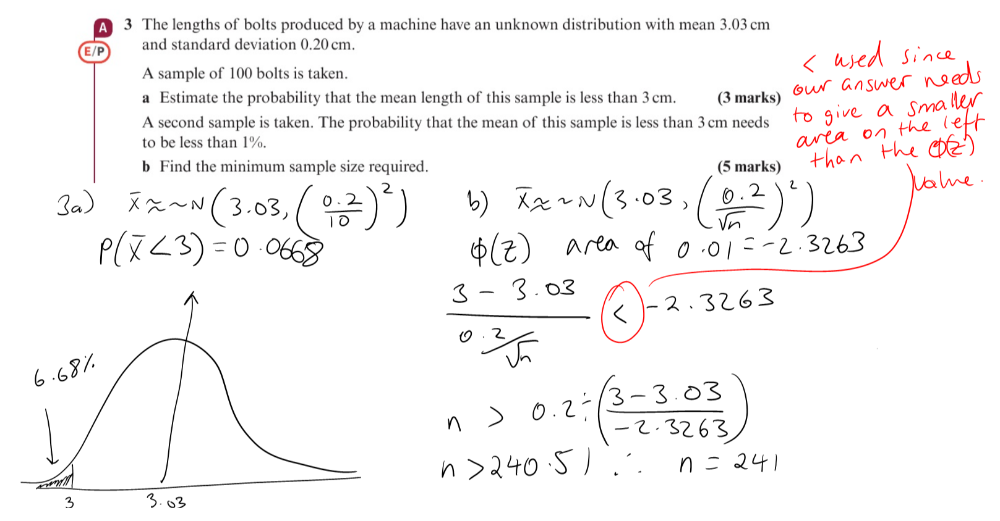
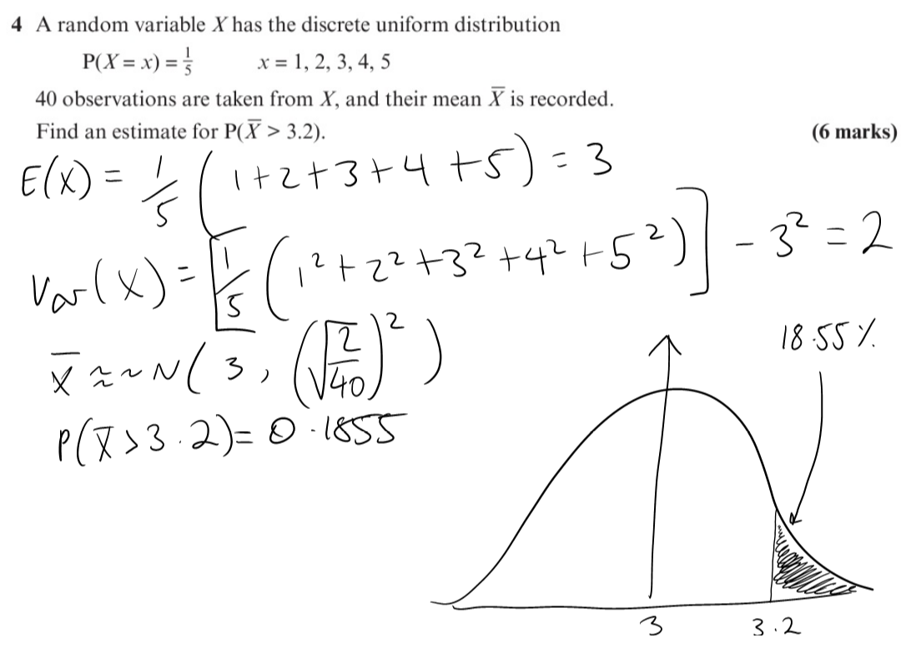
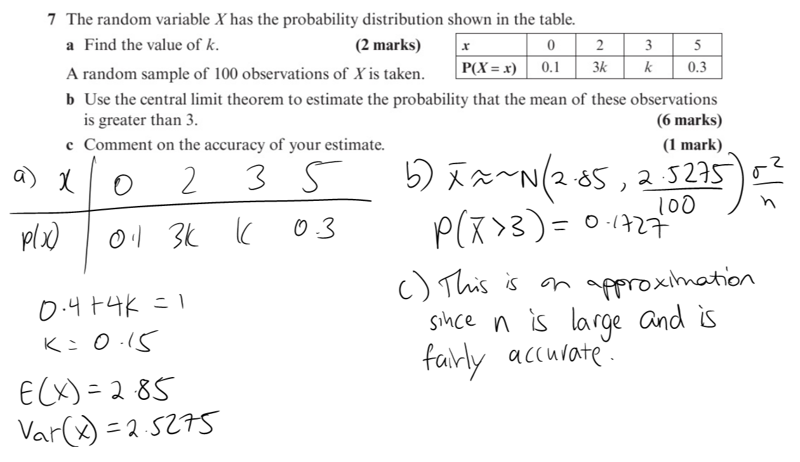
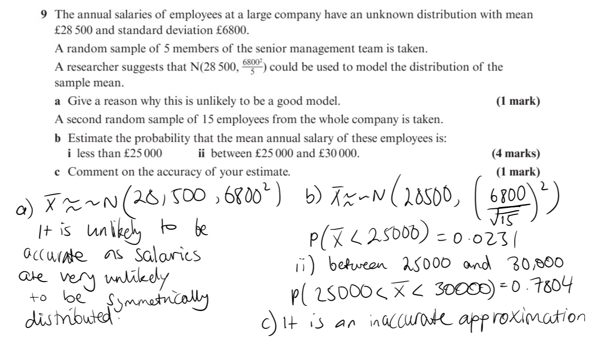
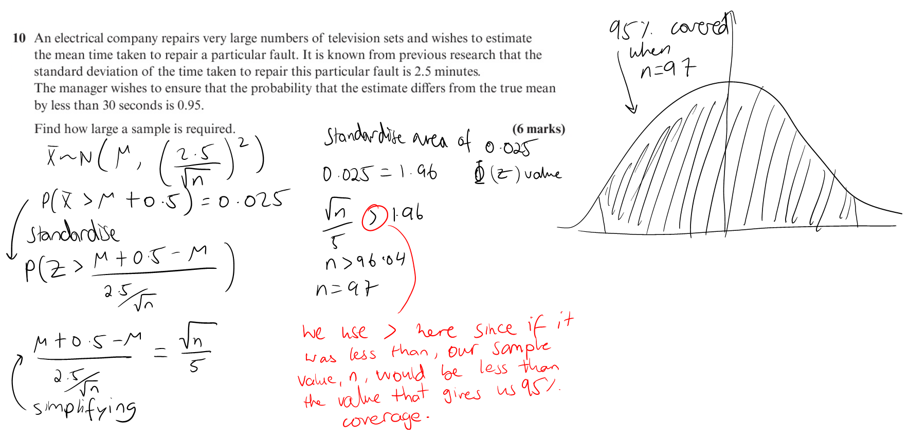
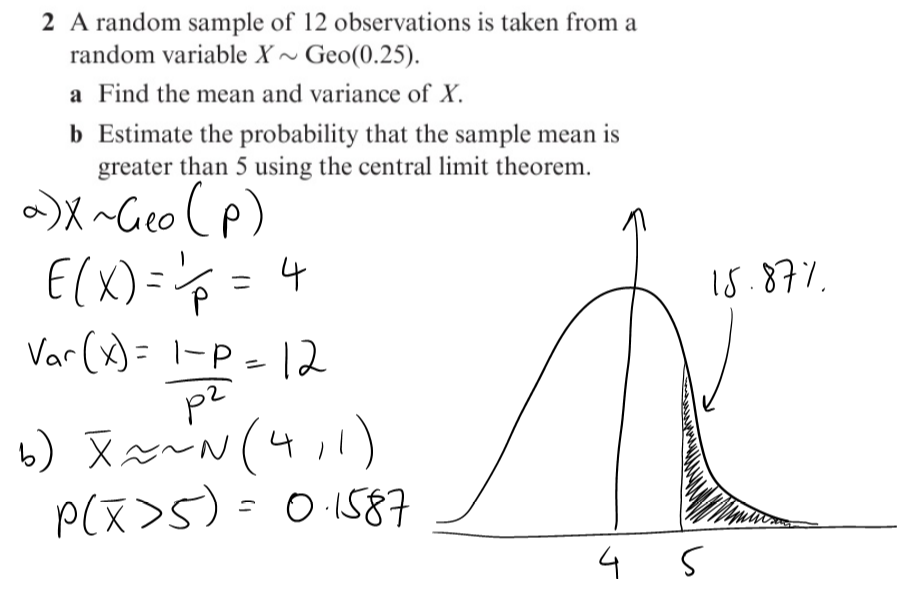
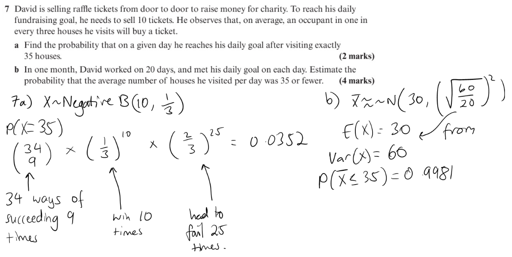
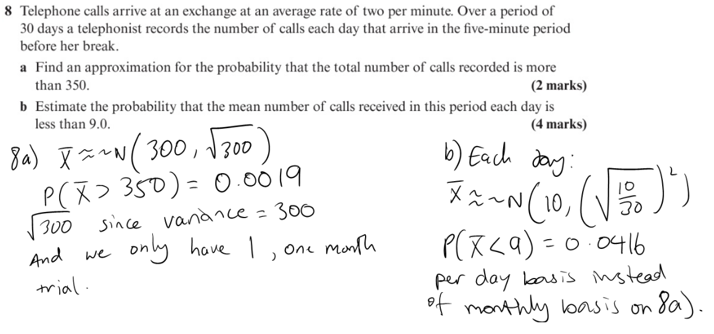
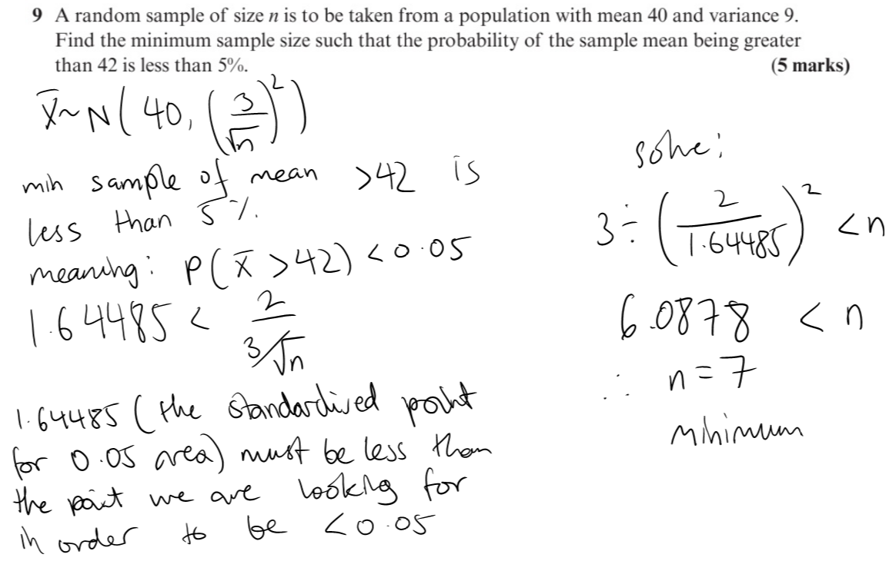

On this page I want to go through the next topic I am going to look at in class, after the Christmas holidays, which is the Central Limit Theorem (CLT) which uses the bell curve knowledge we already have but now we have to apply it to not only finding probabilites from discrete distribution tables but also finding points on the curve given a certain probability.
The CLT is useful when examining the returns of an individual stock or broader indices because analysing the data is simple since getting the necessary data is quite easy and so is visually interpreting the data. Consequently, investors of all types rely on the CLT to analyze stock returns, construct portfolios, and manage risk. To be safe, use at least 30-50 randomly selected stocks (or in the textbook questions make sure there are at least 30-50 samples of what you are testing) across various sectors, should be sampled for the central limit theorem to hold.
In the first question I have demonstrated basic use of a bell curve and finding the probabiltity of being at a certain point on there. b) is slightly harder as you have the probabilty but you do not have the sample size, but with some algebraic manipulation you can get the sample size.
In the next question I will instead be using a discrete probabilty distribution table to get data and model normally.
The next question now introduces situations where modelling normally isn't always accurate if the data you are modelling is not symmetrical, which a bell curve needs to be.
 After the question above I am going to show questions which use data from other statistical distributions which we have gone through in class (e.g the geometric, poisson and (Negative) binomial distributions). These questions are harder since finding the mean, the expected value or E(X), and variance, or Var(X), from the here is harder.
   